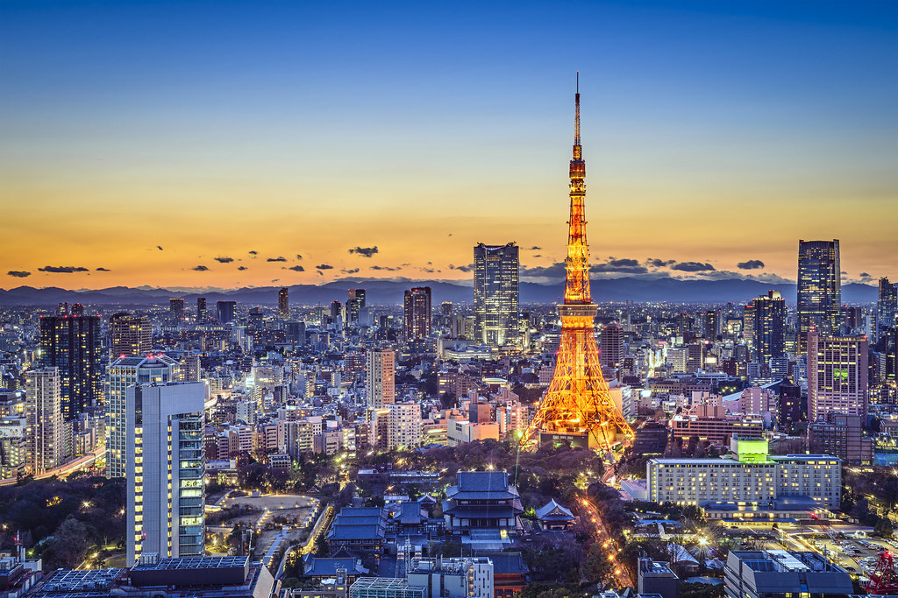

Japan's Essential Cities
Tokyo

Tokyo is one of the world's liveliest cities, full of amazing restaurants, beautiful gardens, stunning modern architecture,
charming backstreets, and a glittering neon-filled cityscape. Beyond the city lights and crowds, Tokyo is also full of quiet
neighborhoods where you'll find locals going about their daily lives, and countless hidden gems in the form of unsung yet
wonderful little shops and restaurants.
Explore charming neighborhoods such as (for example) Aoyama, Daikanyama, Naka-Meguro, and Shimokitazawa. You can also
more peaceful museums, shrines, or gardens such as the Nezu Museum, Meiji Jingu Shrine, and Hamarikyu Garden.
In a city with so much to offer, there is no way you will have time to see, do, and eat everything on your wish list.
But don't lose hope! Because with even just one day in Tokyo, you can get beneath the surface and experience Tokyo like few
travelers ever will.
Sample Trip Highlights
- Tsukiji Market
- Harajuku & Takeshita Dori
- Meiji Jingu & Yoyogi Park
- Shibuya Scramble Crossing
- Historical District, Yanaka
Kyoto

Kyoto is what many travelers envision when they think of Japan, but along with being the country's spiritual heart and
cultural soul, what is Kyoto known for? The ancient capital's highlights include World Heritage temples and shrines,
historic gardens, generations-old shops and restaurants, and picturesque backstreets.
Having served as the capital of Japan for over a thousand years, the name “Kyoto” literally translates as “capital city.”
Today, the old capital is a large, modern city with a population of over one million, yet in many ways still manages to
retain the elegance and traditions of its past.
The city's appeal doesn't just lie in the past, though. One of the ten largest cities in Japan, Kyoto is also a hotbed of
creativity and modernity. From hip new cafes to art galleries and small boutiques run by the coolest young designers, Kyoto
continues to be at the forefront of Japanese culture and one of the world's most rewarding destinations.
Sample Trip Highlights
- Shrines: Fushimi Inari Taisha, Kinkaku-ji, Ginkaku-ji
- Temples: Kiyomizu-dera, Yasaka Jinja
- Higashiyama, Gion, Central Kyoto
- Nijo Castle, Kyoto Imperial Palace, Katsura Rikyu
- The Philosopher's Path
Osaka
The lively metropolis of Osaka, Kansai's largest city, is sometimes overlooked by first-time visitors to Japan (usually in favor of
Kyoto, which always appears on lists of Japan's best destinations). Yet it is a favorite of Japan connoisseurs and repeat visitors,
especially among travelers who love Japanese food.
Osaka is best known for its amazing casual food and outgoing locals. It's arguably Japan's street food capital, and most famous for
snacks including takoyaki and okonomiyaki. Osaka is also renowned for its fun, extroverted people who make eating and drinking in
the city an unforgettable experience.
Sample Trip Highlights
- Osaka Food Tour
- Osaka Castle
- Dotonburi Culinary Street
- Horie, Shinsaibashi, and Amerika-mura
- Kaiyukan Aquarium, Universal Studios Japan, Super Nintendo World